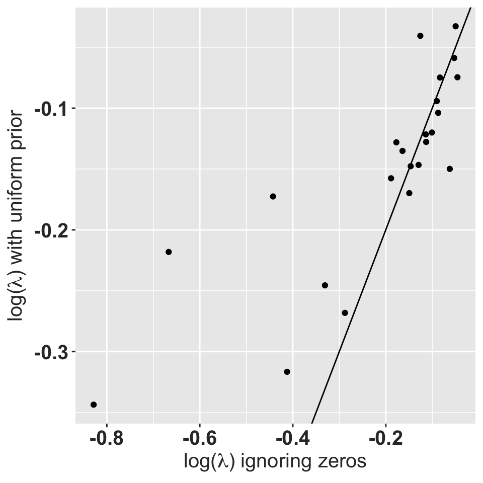

Tremblay and McCarthy (2014) estimated transition probabilities and recruitment rates for another epiphytic orchid from a series of small populations. Although some transitions were not observed in all populations, the presence of a few observations in other populations allowed the statistical models to “borrow strength” from each other and generate estimated probabilities for all transitions. Unfortunately, many (45%; Salguero-Gómez et al. (2015)) plant demography studies are carried out at single sites or few time periods. In those cases there is no information to fill in the blanks for non-observed transitions.
Here we explore the population consequences of setting a prior accounting for counting constraints. Ignoring the problem treats the transition as a fixed zero. This can have severe consequences for matrix structure (Stott et al. 2010). The observed transitions are multinomial rather than binomial events. This can be accommodated by using a Dirichlet prior distribution, albeit at the cost of increased complexity in the calculations. Eberhardt, Knight, and Blanchard (1986) had a small sample size of grizzlies in some age classes. Morris and Doak (pg 197, 2002) recognized the potential problem with small sample sizes for rare transitions, but their recommendation is to use the mathematically more complex approach of Tremblay and McCarthy (2014). Is there anything that can be done on the simple side?
We will use observations of an epiphytic Orchid Lepanthes eltoroensis Stimson an endemic species from Puerto Rico (Tremblay and Hutchings 2003).
library(tidyverse)
library(popbio)
library(raretrans)
# Raymond's theme modifications
rlt_theme <- theme(axis.title.y = element_text(colour="grey20",size=15,face="bold"),
axis.text.x = element_text(colour="grey20",size=15, face="bold"),
axis.text.y = element_text(colour="grey20",size=15,face="bold"),
axis.title.x = element_text(colour="grey20",size=15,face="bold"))
A <- projection.matrix(as.data.frame(L_elto),
stage="stage", fate="next_stage",
fertility="fertility", sort=c("p","j","a"))
knitr::kable(A, digits=2,
caption = "Average transition matrix over all census periods and populations.")| p | j | a | |
|---|---|---|---|
| p | 0.37 | 0.01 | 0.05 |
| j | 0.36 | 0.60 | 0.01 |
| a | 0.02 | 0.10 | 0.84 |
Data was collected from 1850 individuals which were permanently identified and tracked over a 6 year period in intervals of 6 months. Thus transitions are for six month intervals and not yearly transitions as is more frequently published. The life history stages included in this analysis are seedlings (individuals without a lepanthiform sheet on any of the leaves), juveniles (individuals with no evidence of present or past reproductive effort, the base of the inflorescence are persistent), and adult (with presence of active or inactive inflorescences). The average population growth rate over all years and populations is 0.86, suggesting a rapid decline.
plotdata <- L_elto %>% group_by(POPNUM, year, stage) %>%
tally() %>%
group_by(POPNUM, year) %>%
summarise(N = sum(n))
gg1 <- ggplot(plotdata, aes(x=year, y=N, group=POPNUM)) +
geom_line() + rlt_theme
plotsumm <- plotdata %>% group_by(year) %>%
summarize(N=sum(N))
gg2 <- ggplot(plotsumm, aes(x=year, y=N)) +
geom_line() + rlt_theme
ggboth <- gridExtra::grid.arrange(gg1, gg2)
ggboth## TableGrob (2 x 1) "arrange": 2 grobs
## z cells name grob
## 1 1 (1-1,1-1) arrange gtable[layout]
## 2 2 (2-2,1-1) arrange gtable[layout]Population size over time.
OK, now we want to generate matrices for each year and popnum. We have to change the variables into factors and control the levels so that the resulting matrices end up with the right shape with zeros for the missing transitions. Also have to coerce each grouped tbl_df to a regular data.frame using as.data.frame() before passing to projection.matrix().
allA <- L_elto %>%
mutate(stage = factor(stage, levels=c("p","j","a","m")),
fate = factor(next_stage, levels=c("p","j","a","m"))) %>%
group_by(POPNUM, year) %>%
do(A = projection.matrix(as.data.frame(.),
stage="stage", fate="fate",
fertility="fertility", sort=c("p","j","a")),
TF = projection.matrix(as.data.frame(.),
stage="stage", fate="fate",
fertility="fertility", sort=c("p","j","a"), TF = TRUE),
N = get_state_vector(as.data.frame(.),
stage="stage", sort=c("p","j","a"))) %>%
filter(year < 12) # last time period all zero for obvious reasonWe end up with all the matrices for each population and year in a list-column of the result. Working with this thing is a bit awkward. The best strategy is from Jenny Bryans’ talk on list columns and uses mutate with map_*(listcolumn, function).
library(popdemo)
allA <- ungroup(allA) %>%
mutate(A = map(A, matrix, nrow=3, ncol=3,
dimnames=list(c("p","j","a"),c("p","j","a")))) %>%
mutate(lmbda = map_dbl(A, lambda),
ergodic = map_dbl(A, is.matrix_ergodic),
irreduc = map_dbl(A, is.matrix_irreducible),
primitv = map_dbl(A, is.matrix_primitive))
ggplot(allA, aes(x=lmbda)) + geom_histogram() + facet_wrap(~year)+
ylab("Frequency")+
xlab(expression(paste(lambda, ", asymptotic population growth"))) + rlt_themehistograms of asymptotic population growth for each year.
Now, we need to figure out how many matrices are missing transitions. The full matrix has observed transitions in every cell.
allA <- ungroup(allA) %>% mutate(missing = map(A, ~which(.x==0)),
n_missing = map_dbl(missing, length))
missing_summary <- summary(allA$n_missing)
ergo_irr <- as.data.frame(with(allA, table(ergodic, irreduc)))
knitr::kable(ergo_irr, caption = "Ergodicity and irreducibility of individual transition matrices.")| ergodic | irreduc | Freq |
|---|---|---|
| 0 | 0 | 215 |
| 1 | 0 | 17 |
| 0 | 1 | 0 |
| 1 | 1 | 6 |
Out of 11 time periods and 23 populations there are a total of 238 transition matrices. Some periods are missing for some populations. Only 6 of these matrices are irreducible. All of the matrices have 2 or more transitions that are zero but known to be possible.
| Population | Year | Stage | N | seedling | juvenile | adult | seedling1 | juvenile1 | adult1 | seedling2 | juvenile2 | adult2 |
|---|---|---|---|---|---|---|---|---|---|---|---|---|
| 905 | 9 | seedling | 0 | 0.000 | 0.000 | 0.000 | 0.250 | 0.042 | 0.042 | 0.250 | 0.004 | 0.000 |
| 905 | 9 | juvenile | 5 | 0.000 | 0.000 | 0.000 | 0.250 | 0.042 | 0.042 | 0.050 | 0.150 | 0.004 |
| 905 | 9 | adult | 5 | 0.000 | 0.000 | 0.000 | 0.250 | 0.042 | 0.042 | 0.010 | 0.004 | 0.158 |
| 914 | 6 | seedling | 2 | 0.500 | 0.000 | 0.000 | 0.417 | 0.125 | 0.042 | 0.417 | 0.012 | 0.000 |
| 914 | 6 | juvenile | 1 | 0.000 | 0.000 | 0.000 | 0.083 | 0.125 | 0.042 | 0.017 | 0.450 | 0.004 |
| 914 | 6 | adult | 5 | 0.000 | 1.000 | 1.000 | 0.083 | 0.625 | 0.875 | 0.003 | 0.512 | 0.992 |
| 250 | 5 | seedling | 11 | 0.091 | 0.000 | 0.118 | 0.104 | 0.005 | 0.007 | 0.104 | 0.001 | 0.000 |
| 250 | 5 | juvenile | 47 | 0.636 | 0.574 | 0.000 | 0.604 | 0.568 | 0.007 | 0.588 | 0.581 | 0.001 |
| 250 | 5 | adult | 34 | 0.000 | 0.298 | 0.853 | 0.021 | 0.297 | 0.836 | 0.001 | 0.292 | 0.856 |
Ignoring this problem and calculating stochastic \(\lambda\) for each population could yield non-sensical results. For example, the geometric mean \(\lambda\) calculated using simulation fails for 6 out of the 23 populations. These are the populations with one matrix that has \(\lambda = 0\) at some point.
sgr <- allA %>% split(.$POPNUM) %>%
map(~stoch.growth.rate(.x$A, verbose = FALSE))
# distribute results of stoch.growth.rate() into a tbl
xtrc <- function(x){
data.frame(approx=x$approx,
sim = x$sim,
lowerci = x$sim.CI[1],
upperci = x$sim.CI[2])
}
sgr <- bind_rows(map(sgr, xtrc), .id="POPNUM")
filter(sgr, !is.na(sim)) %>%
ggplot(aes(x=approx, y = sim)) + geom_point() +
geom_errorbar(aes(ymin=lowerci, ymax=upperci)) +
geom_abline(slope = 1, intercept=0) +
rlt_theme +
xlab(expression(paste("Tuljapurkar's approximate stochastic ", log(lambda)))) +
ylab(expression(paste("Stochastic ", log(lambda), " by simulation")))Stochastic population growth rates for 17 out of 23 orchid populations.
The six populations where the simulated values are unavailable have very low approximate growth rates as well. All the stochastic growth rates are less than 1. Note that these calculations assume each matrix is perfectly observed; the only stochasticity is between year environmental stochasticity as represented by the observed sample of years.
This strategy uses the transitions in a smarter way that maintains the constraint that all survival/transition probabilities have to add up to 1. We do this by using a dirichlet prior with the function fill_transitions(). This function takes the matrix as a list of 2 components, a matrix of transition probabilities \(T\) and a matrix of fertility contributions \(F\). The Dirichlet prior only applies to the \(T\) matrix. If not specified, the function assumes a uniform prior across the \(m+1\) fates for each stage. The extra category is for individuals that do not survive. Let’s look at a single example to see how it works, using population 231 in period 1. This matrix is non-ergodic and reducible, and there are individuals in every stage.
#
tmat <- allA[23,"TF"][[1]][[1]]$T ## wow! hard to get at ...
fmat <- allA[23,"TF"][[1]][[1]]$F
N <- allA[23,"N"][[1]][[1]]
tmat + fmat##
## p j a
## p 0.0000 0.0000 0.1250
## j 0.0000 0.0000 0.0000
## a 1.0000 0.0000 0.9375The matrix is reducible because the 2nd column and 2nd row could be eliminated without affecting population growth; this is because the 2 juveniles died. The matrix is not ergodic because there is no path from the 2nd stage to either of the other stages.
is.matrix_ergodic((tmat + fmat)[-2,-2])## [1] TRUEis.matrix_irreducible((tmat + fmat)[-2,-2])## [1] TRUEall.equal(lambda((tmat + fmat)[-2,-2]), lambda(tmat + fmat))## [1] TRUESo, to add a dirichlet prior with a weight of 1 to \(T\), we have 4 fates (3 + death), so each fate adds 0.25.
(tmat2 <- tmat + 0.25) # re-cycles automatically##
## p j a
## p 0.2500 0.2500 0.2500
## j 0.2500 0.2500 0.2500
## a 1.2500 0.2500 1.1875lambda(tmat2 + fmat)## [1] 1.637685is.matrix_ergodic(tmat2 + fmat)## [1] TRUEis.matrix_irreducible(tmat2 + fmat)## [1] TRUEThis case is the largest distortion (\(\lambda\) increase from 1.06 to 1.64) observed from a uniform prior for any of the matrices.
testing <- allA %>% mutate(Adirch = map2(TF, N, fill_transitions),
ldirch = map_dbl(Adirch, lambda),
irrdirch = map_dbl(Adirch, is.matrix_irreducible),
ergdirch = map_dbl(Adirch, is.matrix_ergodic),
TN = map2(TF, N, fill_transitions, returnType = "TN"))
ggplot(testing, aes(x=lmbda, y=ldirch)) + geom_point() +
geom_abline(slope = 1, intercept=0) +
xlab(expression(paste(lambda, " ignoring zeros"))) +
ylab(expression(paste(lambda, " using a uniform prior"))) +
rlt_themeAsymptotic growth rate using a uniform prior with a total weight of 1 vs. the asymptotic growth rate for the observed data.
The matrices with \(\lambda = 0\) typically have very few individuals that all die. Matrices with \(\lambda = 1\) usually have observed transitions only on the main diagonal.
ergo_irr <- as.data.frame(with(testing, table(ergdirch, irrdirch)))
knitr::kable(ergo_irr, caption = "Ergodicity and irreducibility of individual transition matrices.")| ergdirch | irrdirch | Freq |
|---|---|---|
| 1 | 1 | 238 |
sgr_unif <- testing %>% split(.$POPNUM) %>%
map(~stoch.growth.rate(.x$Adirch, verbose = FALSE))
sgr_unif <- bind_rows(map(sgr_unif, xtrc), .id="POPNUM")
compare_approx <- data_frame(unif = sgr_unif$approx,
ignored = sgr$approx)
ggplot(compare_approx, aes(x=ignored, y = unif)) +
geom_point() +
geom_abline(slope = 1, intercept=0) +
xlab(expression(paste("log(",lambda,") ignoring zeros"))) +
ylab(expression(paste("log(",lambda,") with uniform prior"))) +
rlt_theme
So using a Dirichlet prior to fill in the gaps works, and doesn’t appear to distort the stochastic population growth rate; all populations still have negative growth. Most populations end up with stochastic growth rates that are lower than with the problematic matrices. All resulting matrices are now ergodic and irreducible.
The other component of the matrix is the fertility. We do this by using a Gamma prior with the function fill_fecundity(). This function takes the matrix as a list of 2 components, a matrix of transition probabilities \(T\) and a matrix of fertility contributions \(F\). The Gamma prior only applies to the \(F\) matrix. If not specified, the function assumes an uniformative prior with \(\alpha = 0.00001, \beta = 0.00001\) across all stages. Stages that do not reproduce are marked with NA_real_ in the prior probability vectors.
testing <- allA %>% mutate(Agamma = map2(TF, N, fill_fecundity, alpha = c(NA_real_, NA_real_, 0.00001), beta = c(NA_real_, NA_real_, 0.00001), priorweight = 1),
lgamma = map_dbl(Agamma, lambda),
irrgamma = map_dbl(Agamma, is.matrix_irreducible),
erggamma = map_dbl(Agamma, is.matrix_ergodic))
ggplot(testing, aes(x=lmbda, y=lgamma)) + geom_point() +
geom_abline(slope = 1, intercept=0) +
xlab(expression(paste(lambda, " ignoring zeros"))) +
ylab(expression(paste(lambda, " using an uninformative prior"))) +
rlt_themeAsymptotic growth rate using a uniform prior with a total weight of 1 vs. the asymptotic growth rate for the observed data.
The matrices with \(\lambda = 0\) typically have very few individuals. Matrices with \(\lambda = 1\) usually have transitions only on the main diagonal. The uninformative Gamma prior does not change \(\lambda\), and does not improve the ergodicity and irreducibility issue. When there is at least 1 adult present, the expected value of Fecundity is very close to zero. When there are no adults present, all those matrices cannot reach the adult stage and so the expected value of Fecundity does not affect \(\lambda\). However, this is not a necessary condition.
ergo_irr <- as.data.frame(with(testing, table(erggamma, irrgamma)))
knitr::kable(ergo_irr, caption = "Ergodicity and irreducibility of individual transition matrices.")| erggamma | irrgamma | Freq |
|---|---|---|
| 0 | 0 | 238 |
We extracted an informative prior from an expert on epiphytic orchids (RLT) to compare with the uniform prior. In particular, we considered the effects of weighting the prior by different fractions of the actual sample size for each population and year.
RLT_Tprior <- matrix(c(0.25, 0.025, 0.0,
0.05, 0.9, 0.025,
0.01, 0.025, 0.95,
0.69, 0.05, 0.025),
byrow = TRUE, nrow = 4, ncol = 3)
RLT_Fprior <- matrix(c(0.0, 0.0, 0.025,
0.0, 0.0, 0.0,
0.0, 0.0, 0.0),
byrow = TRUE, nrow = 3, ncol = 3)The RLT prior gives \(\lambda = 0.96\). In an ideal world this prior would be extracted prior to collecting the data. In this case the prior is only being used to demonstrate the technique.
diffPriors <- list()
diffPriors[["Uniform"]] <- testing %>%
mutate(Tprior = map2(TF, N, fill_transitions, returnType = "T"),
Fprior = map2(TF, N, fill_fecundity,
alpha = c(NA_real_, NA_real_, 0.00001),
beta = c(NA_real_, NA_real_, 0.00001), priorweight = 1, returnType = "F"),
Aprior = map2(Tprior, Fprior, `+`),
lprior = map_dbl(Aprior, lambda))
diffPriors[["RLT, weight = 1"]] <- testing %>%
mutate(Tprior = map2(TF, N, fill_transitions,
P = RLT_Tprior, returnType = "T"),
Fprior = map2(TF, N, fill_fecundity,
alpha = c(NA_real_, NA_real_, 0.025),
beta = c(NA_real_, NA_real_, 1), priorweight = 1, returnType = "F"),
Aprior = map2(Tprior, Fprior, `+`),
lprior = map_dbl(Aprior, lambda))
diffPriors[["RLT, weight = 0.5N"]] <- testing %>%
mutate(Tprior = map2(TF, N, fill_transitions,
P = RLT_Tprior, priorweight = 0.5, returnType = "T"),
Fprior = map2(TF, N, fill_fecundity,
alpha = c(NA_real_, NA_real_, 0.025),
beta = c(NA_real_, NA_real_, 1), priorweight = 0.5, returnType = "F"),
Aprior = map2(Tprior, Fprior, `+`),
lprior = map_dbl(Aprior, lambda))
diffPriors[["RLT, weight = N"]] <- testing %>%
mutate(Tprior = map2(TF, N, fill_transitions,
P = RLT_Tprior, priorweight = 1, returnType = "T"),
Fprior = map2(TF, N, fill_fecundity,
alpha = c(NA_real_, NA_real_, 0.025),
beta = c(NA_real_, NA_real_, 1), priorweight = 1, returnType = "F"),
Aprior = map2(Tprior, Fprior, `+`),
lprior = map_dbl(Aprior, lambda))
diffPriors <- bind_rows(diffPriors, .id="prior")
diffPriors$prior <- factor(diffPriors$prior, levels = c("Uniform", "RLT, weight = 1",
"RLT, weight = 0.5N", "RLT, weight = N"))
ggplot(diffPriors, aes(x=lmbda, y=lprior)) +
geom_point() +
geom_point(data=select(diffPriors, -prior), alpha=0.1) +
geom_abline(slope = 1, intercept=0, linetype = 2) +
ylab(expression(paste(lambda, " including prior information"))) +
xlab(expression(paste(lambda, " from raw observations"))) +
facet_wrap(~prior) +
geom_hline(yintercept = 0.96, color="red", linetype = 2 ) +
theme_bw() + rlt_themeAsymptotic growth rates using prior information on transitions and fecundity vs. the raw observations alone. The horizontal red line indicates \(\lambda\) for the RLT prior. Points for all four priors shown in transparent grey.
Recognizing that the observed transitions are realizations of a Dirichlet distribution gives us a very simple way to derive credible intervals for the transition probabilities in our matrix. The marginal distribution of a single transition is a beta distribution as described above, and we can simply report the 2.5% and 97.5% percentiles of that distribution to provide a credible interval on a transition rate. These intervals do shift and shrink as the weight on the prior increases.
Confidence limits or Credible intervals for transition probabilities out of seedling stage in Population 250, year 5. Shaded bands correspond to 50% (darkest), 90%, 95% and 99.9% (lightest) credible intervals. Smaller intervals are not visible in the p->a transitions when the upper boundary of the interval is smaller than 0.01. Labels are median (lower 95% CI, upper 95% CI). Note that where the median and lower interval are equal to 0.001, the actual value is < 0.001.
Obtaining credible intervals on \(\lambda\) requires simulation, because it is difficult (or maybe impossible) to use the characteristic equation to combine the probability distributions of the matrix entries to obtain the distribution of \(\lambda\).
#71 popn 250 year 5 lambda = 0.93
diffPriors_lci <- list()
samples = 10000
diffPriors_lci[["Uniform"]] <- data_frame(A = sim_transitions(allA$TF[[71]],
allA$N[[71]],
samples = samples),
lprior = map_dbl(A, lambda))## Warning in fill_fecundity(TF, N, alpha = alpha, beta = beta, priorweight =
## priorweight, : length(alpha) != order: only using first value of alpha and
## betadiffPriors_lci[["RLT, weight = 1"]] <- data_frame(A = sim_transitions(allA$TF[[71]], allA$N[[71]],
P=RLT_Tprior,
alpha = c(NA_real_, NA_real_, 0.025),
beta = c(NA_real_, NA_real_, 1),
samples = samples),
lprior = map_dbl(A, lambda))
diffPriors_lci[["RLT, weight = 0.5N"]] <- data_frame(A = sim_transitions(allA$TF[[71]], allA$N[[71]],
P=RLT_Tprior,
alpha = c(NA_real_, NA_real_, 0.025),
beta = c(NA_real_, NA_real_, 1),
priorweight = 0.5,
samples = samples),
lprior = map_dbl(A, lambda))
diffPriors_lci[["RLT, weight = N"]] <- data_frame(A = sim_transitions(allA$TF[[71]], allA$N[[71]],
P=RLT_Tprior,
alpha = c(NA_real_, NA_real_, 0.025),
beta = c(NA_real_, NA_real_, 1),
priorweight = 1,
samples = samples),
lprior = map_dbl(A, lambda))
diffPriors_lci <- bind_rows(diffPriors_lci, .id="prior")
diffPriors_lci$prior <- factor(diffPriors_lci$prior, levels = c("Uniform", "RLT, weight = 1",
"RLT, weight = 0.5N", "RLT, weight = N"))
ggplot(diffPriors_lci, aes(x=lprior)) +
geom_density(fill="grey75") +
facet_wrap(~prior) +
theme_classic() +
rlt_theme +
xlab(expression(paste(lambda," asymptotic population growth"))) +
ylab("Posterior density")Distribution of asymptotic population growth rates for population 250, year 5, with different prior information.
Eberhardt, L. L., R. R. Knight, and B. M. Blanchard. 1986. “Monitoring Grizzly Bear Population Trends.” The Journal of Wildlife Management 50 (4). [Wiley, Wildlife Society]: 613–18. http://www.jstor.org/stable/3800971.
Morris, William F, Daniel F Doak, and others. 2002. “Quantitative Conservation Biology.” Sinauer, Sunderland, Massachusetts, USA.
Salguero-Gómez, Roberto, Owen R. Jones, C. Ruth Archer, Yvonne M. Buckley, Judy Che-Castaldo, Hal Caswell, David Hodgson, et al. 2015. “The compadrePlant Matrix Database: An Open Online Repository for Plant Demography.” Journal of Ecology 103 (1): 202–18. doi:10.1111/1365-2745.12334.
Stott, Iain, Stuart Townley, David Carslake, and David J Hodgson. 2010. “On Reducibility and Ergodicity of Population Projection Matrix Models.” Methods in Ecology and Evolution 1 (3). Wiley Online Library: 242–52.
Tremblay, Raymond L, and Michael J Hutchings. 2003. “Population Dynamics in Orchid Conservation: A Review of Analytical Methods Based on the Rare Species Lepanthes Eltoroensis.” Orchid Conservation, Borneo: Natural History Museum Publications, 183–204.
Tremblay, Raymond L, and Michael A McCarthy. 2014. “Bayesian Estimates of Transition Probabilities in Seven Small Lithophytic Orchid Populations: Maximizing Data Availability from Many Small Samples.” PloS One 9 (7). Public Library of Science: e102859.